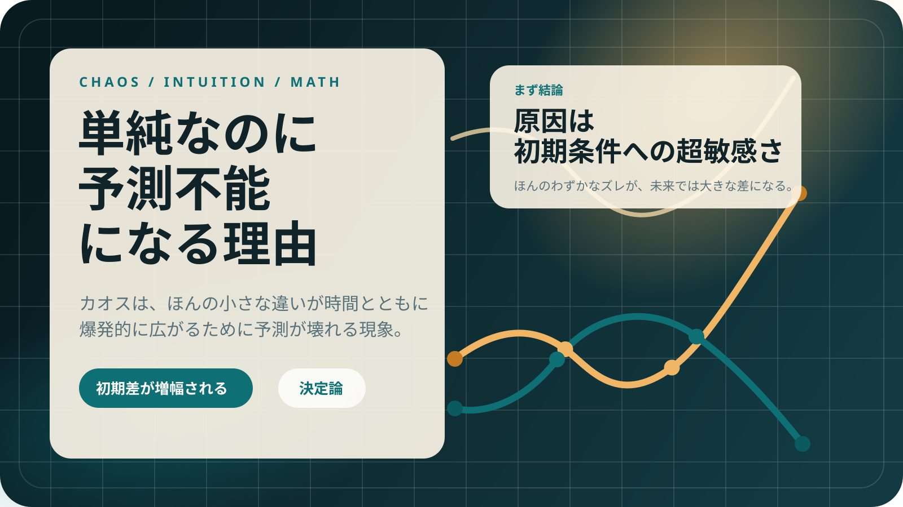

たとえばボールの投げ方
投げる角度が 0.0001° だけ違っても、最初は同じに見えます。でも時間が経つと着地点は大きくずれます。
Chaos / Butterfly Effect / Nonlinearity
カオスは「ぐちゃぐちゃだから難しい」のではなく、
ごく単純な法則でも、ほんの小さな違いが時間とともに爆発的に広がるために予測が壊れる現象です。

原因は 初期条件への超敏感さ。
つまり、ごくわずかなズレが将来の大きな差になることです。
一言でいうと
「決まっているのに予測できない」
法則はあるのに、測定できる精度に限界があるため未来予測が崩れます。
Intuition
最初は同じに見える運動でも、出発点にほんの少し差があれば、時間が経つにつれて全く別の軌道に分かれていきます。
投げる角度が 0.0001° だけ違っても、最初は同じに見えます。でも時間が経つと着地点は大きくずれます。
現在は未来を決めるが、少し違う現在は、全く違う未来になる。
現実では初期状態を完全には測れないので、時間がたつほど予測が壊れます。
Interactive Demo
同じ法則 xn+1 = a xn (1 - xn) を2本とも使っています。違うのは最初の値だけです。
カオスはランダムではありません。同じ式を繰り返しているのに、初期差が増幅されるから読めなくなります。
Examples
Example A
振り子が2つつながっただけなのに、少し条件を変えるだけで動きが大きく変わります。見た目はランダムでも、裏では決定論的な法則に従っています。
Example B
これほど短い式でも、パラメータと初期値しだいで、予測しにくい振る舞いが現れます。
Essence
等速運動のような線形な世界では、差は足し算的に増えます。カオス系では掛け算や曲がった関係が入るため、差が一気に増幅されます。
今の状態が次の状態を決め、その次もまた前の結果で決まります。この繰り返しが、小さな誤差を何度も増やします。
Math
初期の小さな差 δ0 が時間とともにどう増えるかを見ると、カオスの本質がつかめます。
未来予測の壊れやすさを測る尺度です。大きいほど、少しの誤差がすぐ大きな差になります。
法則がわかっていても、初期状態を完全に観測できないなら、長期予測は崩れていきます。
Comparison
| 観点 | カオス | ランダム |
|---|---|---|
| 法則 | ある | ない |
| 仕組み | 決定論 | 確率的 |
| 予測困難の理由 | 初期差の増幅 | 本質的な不確定さ |
カオスは「決まっているのに予測できない」。ここがいちばん重要です。
Next
カオスでは小さな差が増幅されると見ました。次は、その複雑な軌道の中にどんな構造が潜んでいるのかを、ポアンカレ写像で見ていきます。
高校生向けに一言でまとめるなら
カオスとは、ほんの小さな違いが時間とともに爆発的に広がるため、法則があっても予測が難しくなる現象です。